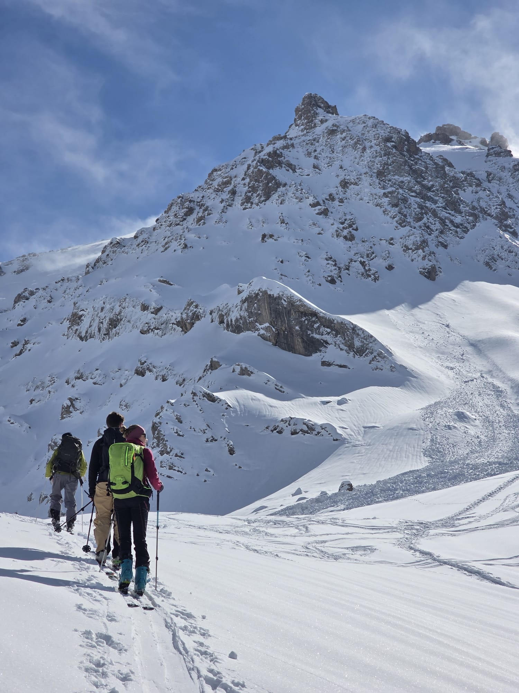
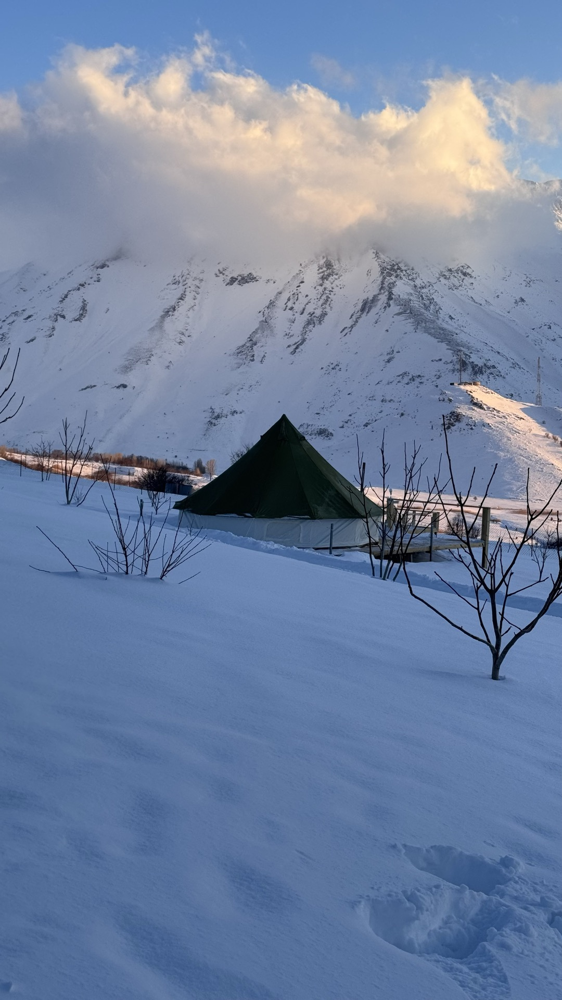
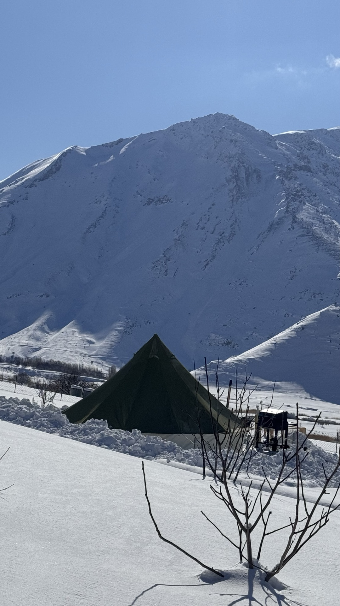
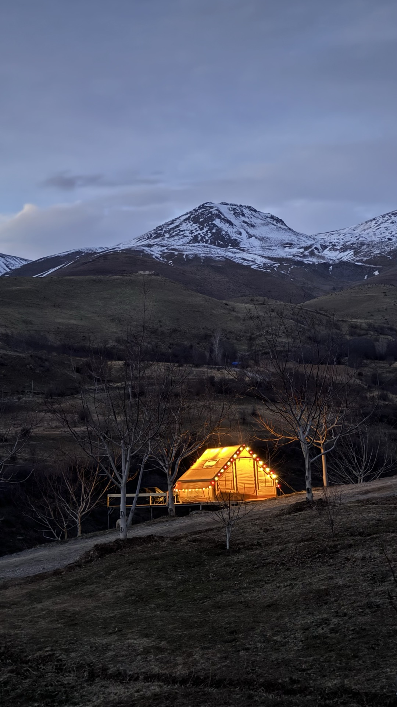
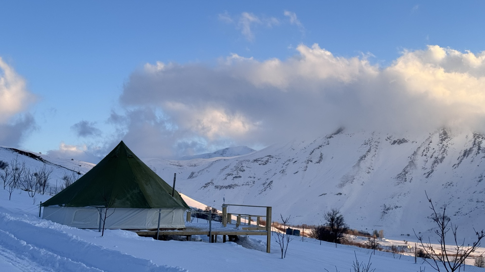
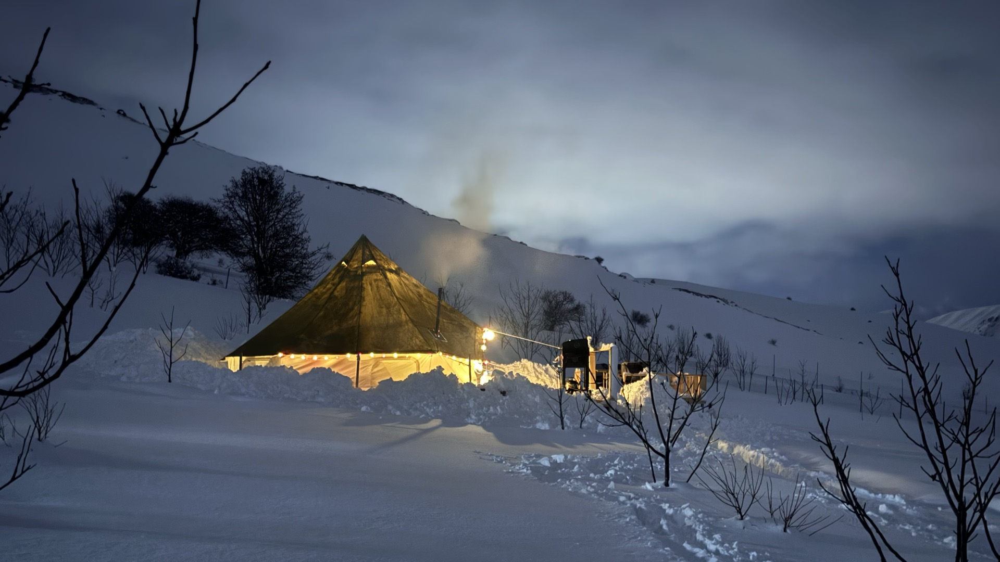
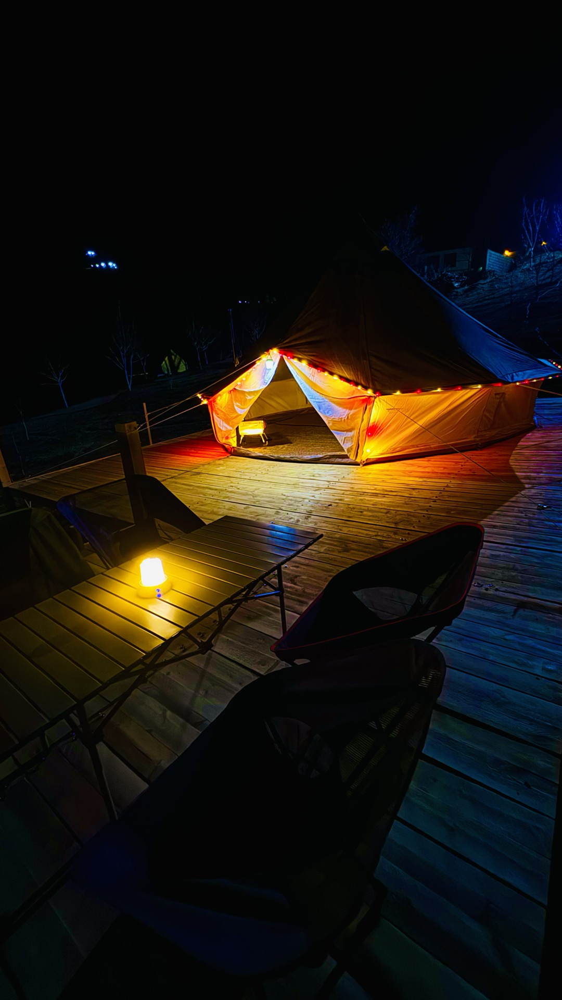
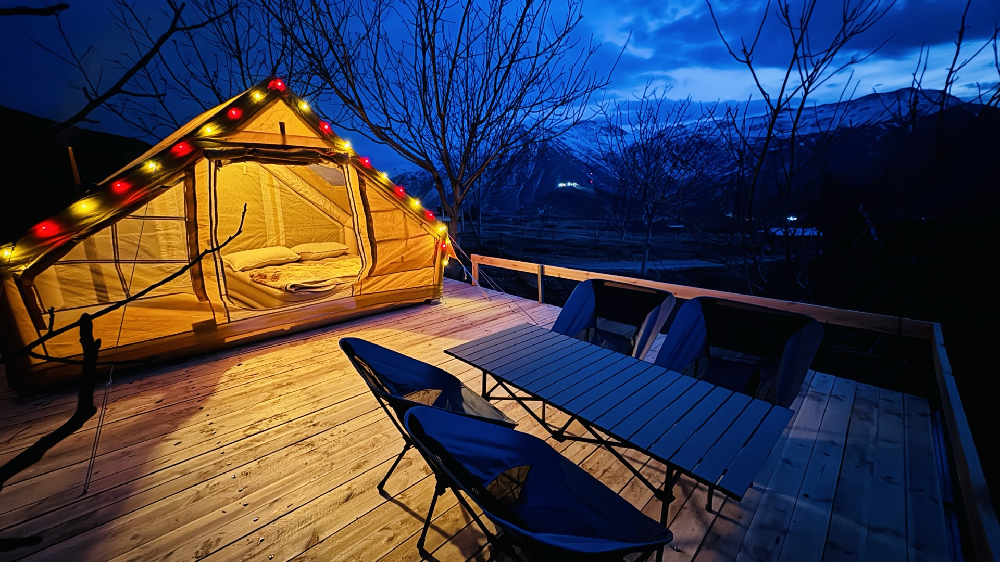
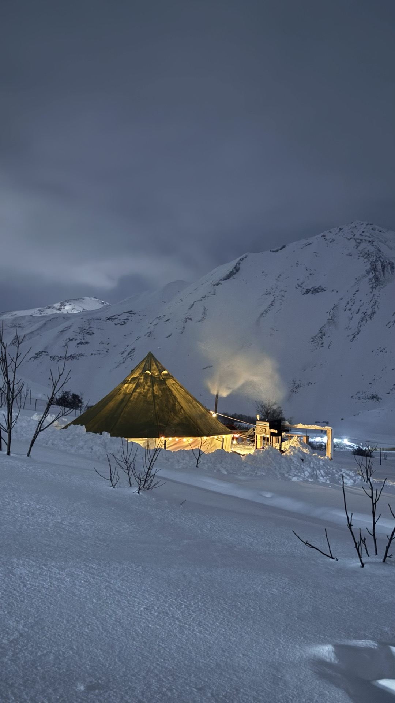

Trek ancient paths to Iraq's highest peak. Camp under stars at 3,000 meters. Wake up to snow-capped Zagros summits. Your Kurdistan adventure starts in Choman.
Founded by Omar Chomani, a local of Choman town, VIKurdistan has been guiding adventurers through the most breathtaking landscapes in the Middle East for over a decade. From the snow-capped summit of Mount Halgurd -- Iraq's tallest peak -- to the ancient paths of the Zagros Mountain Trail, we create authentic experiences that connect you with the land, the people, and the stories of Kurdistan.
As Featured In
From a gentle morning walk through wildflower meadows to conquering the rooftop of Iraq -- every level of adventurer finds their trail here.

Iraq's first long-distance hiking route. 215 km across ancient paths, 30+ villages, canyon walks, and alpine ridges from Shush to the foot of Mount Halgurd.

Conquer Iraq's rooftop at 3,607m

Base camp & upper alpine meadows

Green meadows, orchards & streams

Gentle foothills & wildflower trails

Kurdistan's highest alpine lake at 3,000m
Next departure: March 19-31, 2026 -- coinciding with Nawroz, the Kurdish New Year. The most magical time to walk the trail.
Arrive at Erbil International Airport where your VIKurdistan guide will greet you. Transfer to the hotel for a welcome briefing, then explore the ancient Erbil Citadel -- one of the oldest continuously inhabited sites on earth (6,500+ years). Wander through traditional bazaars alive with color, spice, and Kurdish hospitality. End with an authentic dinner of kebab, dolma, and fresh bread. Your Zagros journey begins here.
Drive to the village of Shush to begin your trek. Walk Stage 1 through scenic countryside with views stretching across rolling hills and historic paths. Arrive in Akre for the evening's highlight -- the legendary Nawroz celebration. Thousands of flames light up the mountainside as communities gather for music, dancing, fire-lighting ceremonies, and cultural festivities that mark the Kurdish New Year. An unforgettable night.
Hike Stage 2 & 3 through rolling hills and serene landscapes. The trail meanders through pine forests and past ancient ruins -- church remnants and a synagogue under restoration remind you that these mountains have hosted diverse communities for millennia. Arrive in Safti village as the sun paints the hills golden. Your homestay family awaits with freshly prepared Kurdish dishes.
Three days of pure mountain magic. Walk through lush valleys where streams cut through green pastures (Stage 4), climb high ridgelines with panoramic views stretching to the horizon (Stage 5), and follow riverside paths beneath dramatic mountain walls (Stage 6). Each night, a new village. Each family, a new story. Each meal, a feast of flavors you've never imagined -- fresh bread from clay ovens, lamb slow-cooked over open flame, honey from mountain bees.
Enter some of the trail's most spectacular terrain. Stage 7 through mountain forests and remote terrain is widely considered the trail's most impressive section. Pass through the dramatic Rawanduz Canyon -- where towering cliff walls frame a river far below. Trek past orchards heavy with fruit on ascending mountain tracks. The landscape grows wilder, the air thinner, the views more staggering with every step.
The final approach. Hike through scenic river valleys and cross streams as the mighty silhouettes of Halgurd and Sakran mountains grow larger on the horizon. You're walking toward the highest peaks in Iraq. Arrive in Choman -- the charming mountain town that serves as gateway to the summit. This is where VIKurdistan was born. Meet Omar's community, explore the local market, and rest before the grand finale.
The moment the entire trail has been building toward. Walk Stage 12 -- a high alpine ascent into the scenic highlands beneath Mount Halgurd, Iraq's tallest peak (3,607m). Pass remote stone dwellings, cross mountain streams, walk through wildflower meadows, and enter a landscape of raw, untouched alpine beauty. Snow patches glitter in the sun. The silence is profound. This is the rooftop of Iraq.
After breakfast with your Choman hosts, drive back through the spectacular mountain roads to Erbil. Transfer to Erbil International Airport for your departure. You'll carry home more than photos -- you'll carry the taste of mountain honey, the sound of Kurdish music echoing off canyon walls, the warmth of families who opened their homes, and the quiet knowledge that you walked one of the world's last undiscovered great trails.
Whether you're a seasoned mountaineer or prefer a gentle morning walk, Halgurd has a trail with your name on it. Snow-capped for 10 months a year, home to golden eagles and Persian leopards.
The full summit push to 3,607 meters. Trek from Choman to base camp, camp overnight, then summit at dawn for sunrise views across three countries -- Iraq, Iran, and Turkey. Scrambling sections, snow fields, and the raw power of standing on Iraq's highest point.
Reach the upper alpine meadows and base camp area at 2,500-3,000m without the technical summit push. Pass remote stone dwellings, cross mountain streams, and walk through seas of wildflowers beneath the towering peak. Spectacular views without the mountaineering commitment.
Follow the valley road out of Choman into a world of green meadows, ancient orchards, and crystal-clear streams. The path follows a water channel through the lower valley with Halgurd's snow-capped peak always watching from above. Perfect balance of adventure and accessibility.
A gentle morning walk through the Halgurd foothills. Wildflower meadows bloom in spring, pastoral scenery unfolds in every direction, and the mountain air is impossibly fresh. Ideal for photographers, families, or anyone wanting to taste the mountains without breaking a sweat.
The "frozen waterfall" -- up to 50 meters high at nearly 2,000m elevation. So iconic it's printed on the 50,000 Iraqi Dinar banknote. Water temperature never exceeds 20C, even in the peak of summer. In winter, the entire cascade freezes into a crystalline sculpture.
Between Choman & SoranA 10-kilometer gorge near the Iranian border where towering cliff walls frame rushing rivers far below. Green from spring to autumn, draped in waterfalls, and passable on foot from the road above. One of the most dramatic canyons in all of the Middle East.
En route Erbil to ChomanAt 3,200 meters on Hasari Sakran Mountain, this is Kurdistan's highest natural site. Snow persists even in July. A 7-10 hour trek rewards the truly adventurous with one of the most remote and pristine spots in all of Iraq. Named after the family who first discovered it.
Balakayati region, near ChomanIraq's highest waterfall, drawing 500,000 visitors yearly. Named after the Yazidi prince Mir Ali Beg. Once featured on the Iraqi 5-dinar note. The three rivers -- Rwandz, Sidakan, and Khalifan -- converge here in a thunderous display of nature's power.
130km from Erbil, en routeJust 20km from Choman at the Iraq-Iran border, sitting at 1,900m. Hills, streams, and meadows surrounded by mountains including Mount Sakran. One of the most scenic border crossings in the world, with lush green valleys that feel otherworldly.
20km east of ChomanAt the foot of Halgurd, this lush valley is blessed with fresh water, forests, and orchards. A small river passes through the valley floor. Above, the ancient Rost Citadel perches atop the surrounding mountains -- an archaeological treasure with sweeping views of the entire region.
On the Soran-Choman highwayFrom luxury mountain villas with pools to cozy glamping tents glowing warm against a backdrop of snow-covered peaks -- Choman's accommodations are as extraordinary as its landscapes.

Fall asleep to the sound of mountain wind in a warm bell tent on a wooden deck. Step outside to a sky full of stars you've never seen before. Includes wood stove heating, comfortable bedding, and outdoor seating area.

Private mountain villas with pools, panoramic views, and modern amenities surrounded by ancient peaks. Choose from Red House (35+ guests, 360-view room), Blue House (indoor pool), or Yellow House (intimate garden setting).
The most authentic way to experience Kurdistan. Sleep in a Kurdish family home, share meals around a communal floor spread, drink endless glasses of chai, and leave as family. Available along the ZMT and in Choman itself.
Founded by Omar Chomani, a Choman native. We don't just visit these mountains -- we grew up in them. Every guide is local, every connection is real.
13+ years of experience, all permits secured, verified homestays, professional guides monitoring every stage. Your safety is non-negotiable.
Every dollar you spend stays in the community. Homestay families, local guides, village cooks -- your adventure directly supports 30+ rural communities.
Featured in NYT, National Geographic, Lonely Planet. The ZMT won the 2025 BGTW Best Wider World Tourism Project award. Trusted by the world's best travel media.

Whether it's the 13-day Zagros Trail, a summit push on Halgurd, or a weekend in a mountain villa -- your Kurdistan adventure is one message away.